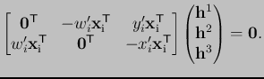
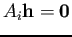
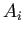
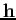
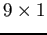
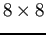
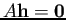

Siguiente: HomografÃa con RANSAC. Subir: Estimación de la homografÃa Anterior: Estimación de la homografÃa Índice General
El sistema 2.26 se puede escribir como  donde  es la matriz de y  el vector de  de la ecuación (2.26). Para cada correspondencia de puntos se obtienen 2 ecuaciones, por lo que 4 correspondencias (forman un sistema de ) resultan suficientes para resolver los 8 grados de libertad de (recordar que se determina para un factor de escala), siempre que se tengan al menos 3 puntos no colineales.
Si se tienen más de cuatro correspondencias , el conjunto de ecuaciones  tiene muchas soluciones. Además, si estas correspondencias no son exactas, la solución encontrada no será adecuada, por lo que el problema se convierte en estimar la homografÃa minimizando una función de error ().
Existen algoritmos como least median of squares (LMEDS) () o el de random sample consensus (RANSAC)(,) que pueden hallar la mejor solución aproximada minimizando el error y a su vez, tratando de detectar cuáles son los supuestos valores de coincidencias válidos (del inglés, inliers) y los espurios (del inglés, outliers). Además son capaces de utilizar más de cuatro correspondencias para obtener una solución más exacta. El método LMEDS, a diferencia del RANSAC, no necesita un umbral para distinguir entre las correspondencias válidas y las espurias, sin embargo, LMEDS sólo funciona correctamente cuando hay más de un  de valores válidos (,27).